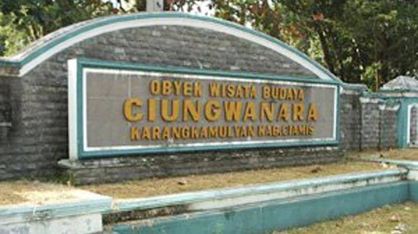
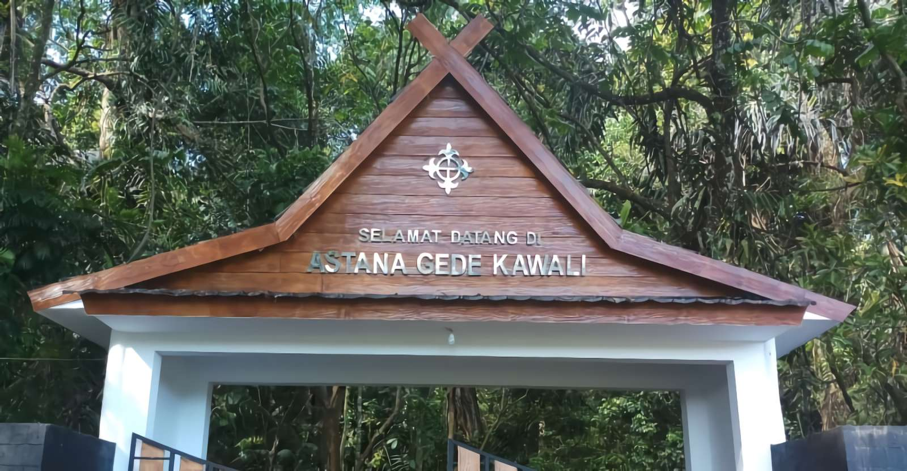
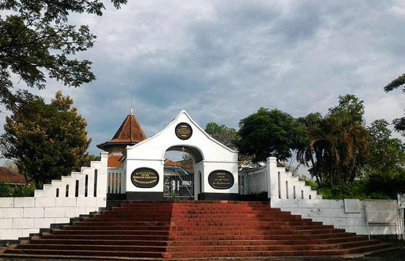
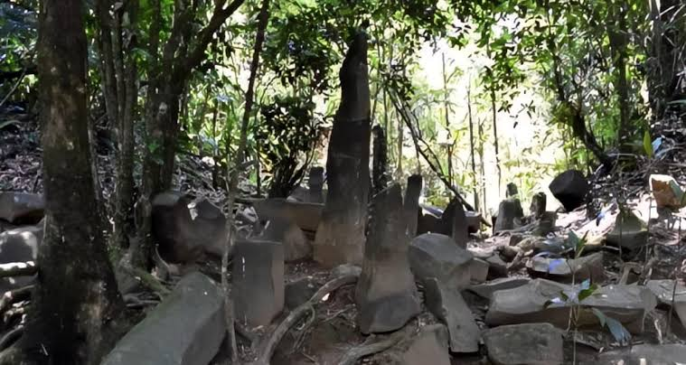
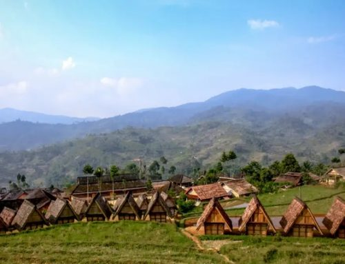

Sejarah Tatar Galuh

Situs Bojong Galuh Karangkamulyan (Situs Ciung Wanara)
Situs Bojong Galuh Karangkamulyan (Situs Ciung Wanara) adalah objek wisata sejarah, budaya, dan arkeologi yang terletak di Desa Karangkamulyan, Kecamatan Cijeungjing, Kabupaten Ciamis, Jawa Barat.

Situs Astana Gede Kawali
Merupakan pusat pemerintahan Kerajaan Galuh pada masa kepemimpinan Sunda purba. Di kawasan cagar budaya ini terdapat Prasasti Kawali (I sampai VI), batu pamuruyan, serta petirtaan Kolam Cikawali.

Situs Jambansari
Situs Jambansari adalah salah satu cagar budaya dan tempat ziarah penting yang terletak di Kabupaten Ciamis, Jawa Barat

Situs Gunung Susuru
<<<<<<< HEADKompleks situs peninggalan masa Kerajaan Galuh yang dikelilingi oleh lanskap alam dan struktur bebatuan masa lalu.
=======Kompleks situs peninggalan masa Kerajaan Galuh yang dikelilingi oleh lanskap alam dan struktur bebatuan masa lalu.
>>>>>>> 16055c33b85e221a9d0d236d44211710601128d3Kampung Adat Kuta
=======
Situs Batu Panjang
Kawasan perkampungan tradisional yang masih memegang teguh adat istiadat leluhur secara turun-temurun, lengkap dengan hutan keramat (Leuweung Gede) yang dilindungi aturan adat ketat.

Kampung Adat Kuta
>>>>>>> 16055c33b85e221a9d0d236d44211710601128d3Kawasan perkampungan tradisional yang masih memegang teguh adat istiadat leluhur secara turun-temurun, lengkap dengan hutan keramat (Leuweung Gede) yang dilindungi aturan adat ketat.